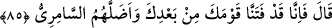

85. Allah buyurdu: “Senden sonra biz, kavmini (Hârun ile kalan
İsrailoğulları’nı) imtihan ettik ve Sâmirî onları yoldan çıkardı.”
“Allah buyurdu: “Senden sonra biz, kavmini” Hârun ile kalan İsrâiloğulları’nı
“imtihan ettik” Sen İsrailoğulları’nın arasından ayrıldıktan sonra biz onları bir fitneye
dûçâr ettik ve onların îmanda kararlı olup olmadıklarını bir buzağı yaratarak denedik.
Onlar Mûsâ (a.s.)’ın Hz. Hârun ile birlikte deniz kenarında bıraktığı İsrâiloğulları’dır.
Onlar altı yüz bin kişiydiler. Onların içinde ancak on iki bin kişi buzağıya tapmaktan
kurtuldu.
Allah Teâlâ, Hz. Mûsâ’ya: “Sen, nereden geldiğini biliyor musun?” buyurdu. Hz.
Mûsâ: “Hayır, yâ Rabbi” dedi. Allah Teâlâ: “Sen, Hârun’a “benden sonra kavmimi
yönet” diyerek ona îtimad ettiğin zaman ben neredeydim?” buyurdu.
Burada peygamberlerin ve onlara tâbi olanların yolunun çeşitli imtihan ve belâlarla
kuşatılmış olduğuna işâret vardır. Nitekim Nebi (a.s.): “Belâlar, derecelerine göre
peygamberlere yüklenmiştir.”[93] buyurmuştur. “Dostluk için imtihan/belâ, altın için
ateş gibidir.” denilmiştir.
Yine burada ümmetin ve mürîdin fitnesinin peygamberden ve şeyh ile beraberlikten
ayrılmak olduğuna işâret vardır. Nitekim Allah Teâlâ şöyle buyurmuştur: “Senden sonra
biz, kavmini imtihan ettik.” Yani sen aralarından ayrıldıktan sonra İsrâiloğulları’nı
denedik. Çünkü yolcu, arkadaşlarıyla beraberlikten ayrılırsa, yol kesicilere ve
felâketlere mâruz kalır.
Hâfız der ki:
Hızır kılavuz olmadıkça bu konağı aşmaya kalkışma
Çünkü kapkaranlık bir yol, yol yitirmeden kork
Rivâyet olunur ki İsrâiloğulları, Hz. Mûsâ’nın tavsiyesine uygun olarak yirmi gece
beklediler. Bu yirmi geceyi gündüzleri ile birlikte kırk gün olarak hesapladılar. Sonra
“Süreyi tamamladık, Mûsâ’nın kendisi de eseri de yok.” dediler.
“Ve Sâmirî onları yoldan çıkardı.” Yani bu fitneyi tertipleyen ve buzağıya tapmaya
çağıran o idi.
el-Es’iletü’l-muhkime’de şöyle der: Allah Teâlâ “İdlâl/saptırma” fiilini Sâmirî’ye
izâfe etmiştir. Çünkü bu iş, onun ifâdesi ve çağrısıyla olmuştur. Allah, imtihanı ise
kendisine izâfe etmiştir. Çünkü imtihan O’nun fiili, kudreti, irâdesi ve yaratması ile
meydana gelmiştir. Eşyanın sebeplere ve müsebbibe izâfe edilmesi sürekli olarak bu
şekildedir.”
Cenab-ı Hakk’ın Mûsâ (a.s.)’ın geldiği sırada ona bu imtihanın meydana geldiğini
bildirmesi ya onun Allâh’ın ilminde ve meşîetinde tahakkuku îtibâriyledir ya da olması
beklenen şeyi olmuş gibi ifâde yoluyladır veya Hz. Mûsâ ayrıldığında Sâmirî bu fitneyi